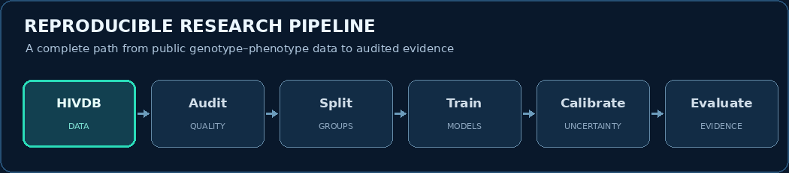

Experimental evidence
Equal-weighted mean error across matched drug–seed runs (lower is better).
| Model | Mean RMSE | Mean MAE |
|---|---|---|
| Median baseline | 2.334 | 1.872 |
| Mutation ridge | 1.113 | 0.824 |
| Position-only trees | 1.267 | 0.862 |
| Mutation forest | 1.111 | 0.759 |
| HIV-ShiftGuard ensemble | 1.017 | 0.719 |
At the nominal 90% target, standard intervals covered 90.12% of pooled test observations; novelty-scaled intervals covered 90.00% and were slightly wider. Position-only trees used different capacity and are an exploratory comparison.
Research workflow

Stanford HIVDB → data integrity checks → linked-genotype grouping → drug-specific models → conformal uncertainty → evaluation. The source package supports one-click Windows execution and checkpointed resumption.
Figures from the manuscript


Data and authorship
Stanford HIV Drug Resistance Database (research datasets). Curated aggregate results retain source provenance; raw data are not redistributed.
Jasmine Kaur · Hossein Tabasi · Alok Raj (corresponding author) · Pankaj Vaidya · Anurag Rana